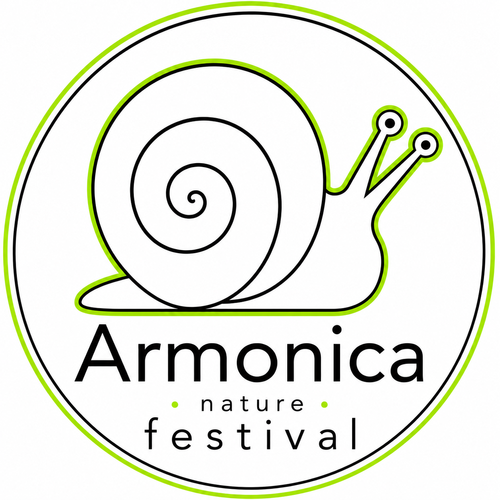

Dal pomeriggio
Esperienze da fare insieme
- Laboratori e attività partecipative
- Sport, movimento e benessere
- Incontri, musica acustica e testimonianze
- Showcooking e sapori del territorio
Nord Italia Festival del benessere e dell'inclusione
La Spirale della Vita è un festival da attraversare. Sette anelli uniscono natura, corpo, nutrizione, mente, anima, inclusione e innovazione. Al centro, tutto diventa spettacolo.
Prima edizione in costruzione. Sede, date e programma sono in via di definizione.

01 / La visione
La spirale non è una scenografia. È una strada continua, leggibile e senza gradini che accompagna ogni persona dal bordo esterno al palco centrale.
Dalla radice alla luce, una comunità cammina nella stessa direzione.
02 / Il percorso
Ogni tappa apre un mondo. Passa il cursore o usa il tasto Tab per seguirne il movimento verso il centro.
Alberi, acqua, accoglienza e suoni della natura.
Movimento, sport, postura e salute.
Prodotti del territorio, degustazioni e showcooking.
Psicologia, consapevolezza e crescita personale.
Musica, arte, spiritualità e silenzio.
Associazioni, sport paralimpici e tecnologie assistive.
Realtà virtuale, intelligenza artificiale ed energie rinnovabili.
Il palco centrale, il punto in cui la spirale si accende.
03 / L'esperienza
Dal pomeriggio
Quando scende la sera
04 / Inclusione nativa
Un percorso continuo e senza gradini. Attività progettate per essere vissute insieme. Competenze reali coinvolte fin dall'inizio.
05 / Per le famiglie
All'ingresso della spirale, un luogo protetto per giocare, creare e assaggiare. Giostre a tema natura, laboratori e piccoli riti di meraviglia perché il benessere comincia dal gioco.
06 / Entra nel progetto
Campagna in preparazione
Un festival così non si finanzia soltanto: si costruisce insieme. Scegli il modo in cui vorresti partecipare e aiutaci a capire quale parte della spirale può prendere vita per prima.
01 / Scegli l'intensità
Le quote sono indicative: ci aiutano a progettare la futura campagna insieme alla comunità.
Un Passo indicativo da 35 € per l'anello Inclusione.
Prenota il tuo passo Si aprirà un'email precompilata. L'invio non comporta impegni o addebiti.01 / Raccontaci cosa porti
Associazioni, scuole, artisti, professionisti e realtà locali possono co-progettare un'attività.
Una proposta di Laboratorio partecipativo per l'anello Anima.
Proponi l'esperienza Ti risponderemo per approfondire fattibilità, spazi e modalità di collaborazione.01 / Scegli il tuo impatto
Imprese, fondazioni e istituzioni possono sostenere un ambito, mettere a disposizione servizi o aprire connessioni sul territorio.
Una possibile collaborazione per l'anello Inclusione: Sostegno economico.
Apri il dialogo Costruiremo insieme un perimetro trasparente e coerente con i valori del festival.Quello che possiamo rendere possibile
Questa non è ancora una raccolta fondi. È una chiamata alla comunità: raccogliamo manifestazioni d'interesse per progettare una campagna sostenibile, trasparente e commisurata al festival reale.
Armonica Nature Festival
La prima edizione sta prendendo forma. Scrivici per ricevere informazioni o partecipare al progetto.